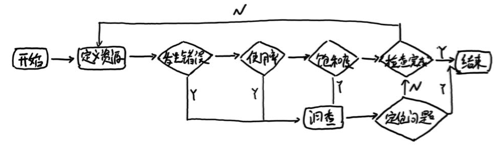

<!DOCTYPE HTML>
<html lang="" >
    <head>
        <meta charset="UTF-8">
        <meta content="text/html; charset=utf-8" http-equiv="Content-Type">
        <title>最佳实践：4个黄金指标和USE方法 · GitBook</title>
        <meta http-equiv="X-UA-Compatible" content="IE=edge" />
        <meta name="description" content="">
        <meta name="generator" content="GitBook 3.2.3">
        
        
        
    
    <link rel="stylesheet" href="../gitbook/style.css">

    
            
                
                <link rel="stylesheet" href="../gitbook/gitbook-plugin-highlight/website.css">
                
            
                
                <link rel="stylesheet" href="../gitbook/gitbook-plugin-search/search.css">
                
            
                
                <link rel="stylesheet" href="../gitbook/gitbook-plugin-fontsettings/website.css">
                
            
        

    

    
        
    
        
    
        
    
        
    
        
    
        
    

        
    
    
    <meta name="HandheldFriendly" content="true"/>
    <meta name="viewport" content="width=device-width, initial-scale=1, user-scalable=no">
    <meta name="apple-mobile-web-app-capable" content="yes">
    <meta name="apple-mobile-web-app-status-bar-style" content="black">
    <link rel="apple-touch-icon-precomposed" sizes="152x152" href="../gitbook/images/apple-touch-icon-precomposed-152.png">
    <link rel="shortcut icon" href="../gitbook/images/favicon.ico" type="image/x-icon">

    
    <link rel="next" href="SUMMARY.html" />
    
    
    <link rel="prev" href="prometheus-promql-with-http-api.html" />
    

    </head>
    <body>
        
<div class="book">
    <div class="book-summary">
        
            
<div id="book-search-input" role="search">
    <input type="text" placeholder="Type to search" />
</div>

            
                <nav role="navigation">
                


<ul class="summary">
    
    

    

    
        
        
    
        <li class="chapter " data-level="1.1" data-path="../">
            
                <a href="../">
            
                    
                    Introduction
            
                </a>
            

            
        </li>
    
        <li class="chapter " data-level="1.2" data-path="../Introduction.html">
            
                <a href="../Introduction.html">
            
                    
                    简介
            
                </a>
            

            
        </li>
    

    
        
        <li class="header">Part I - Prometheus基础</li>
        
        
    
        <li class="chapter " data-level="2.1" data-path="../quickstart/">
            
                <a href="../quickstart/">
            
                    
                    第1章 介绍
            
                </a>
            

            
            <ul class="articles">
                
    
        <li class="chapter " data-level="2.1.1" data-path="../quickstart/why-monitor.html">
            
                <a href="../quickstart/why-monitor.html">
            
                    
                    Prometheus简介
            
                </a>
            

            
        </li>
    
        <li class="chapter " data-level="2.1.2" data-path="../quickstart/prometheus-quick-start.html">
            
                <a href="../quickstart/prometheus-quick-start.html">
            
                    
                    初识Prometheus
            
                </a>
            

            
            <ul class="articles">
                
    
        <li class="chapter " data-level="2.1.2.1" data-path="../quickstart/install-prometheus-server.html">
            
                <a href="../quickstart/install-prometheus-server.html">
            
                    
                    安装Prometheus Server
            
                </a>
            

            
        </li>
    
        <li class="chapter " data-level="2.1.2.2" data-path="../quickstart/use-node-exporter.html">
            
                <a href="../quickstart/use-node-exporter.html">
            
                    
                    使用Node Exporter采集主机数据
            
                </a>
            

            
        </li>
    
        <li class="chapter " data-level="2.1.2.3" data-path="../quickstart/promql_quickstart.html">
            
                <a href="../quickstart/promql_quickstart.html">
            
                    
                    使用PromQL查询监控数据
            
                </a>
            

            
        </li>
    
        <li class="chapter " data-level="2.1.2.4" data-path="../quickstart/use-grafana-create-dashboard.html">
            
                <a href="../quickstart/use-grafana-create-dashboard.html">
            
                    
                    监控数据可视化
            
                </a>
            

            
        </li>
    

            </ul>
            
        </li>
    
        <li class="chapter " data-level="2.1.3" data-path="../quickstart/prometheus-job-and-instance.html">
            
                <a href="../quickstart/prometheus-job-and-instance.html">
            
                    
                    任务和实例
            
                </a>
            

            
        </li>
    
        <li class="chapter " data-level="2.1.4" data-path="../quickstart/prometheus-arch.html">
            
                <a href="../quickstart/prometheus-arch.html">
            
                    
                    Prometheus核心组件
            
                </a>
            

            
        </li>
    
        <li class="chapter " data-level="2.1.5" data-path="../quickstart/SUMMARY.html">
            
                <a href="../quickstart/SUMMARY.html">
            
                    
                    小结
            
                </a>
            

            
        </li>
    

            </ul>
            
        </li>
    
        <li class="chapter " data-level="2.2" data-path="./">
            
                <a href="./">
            
                    
                    第2章 探索PromQL
            
                </a>
            

            
            <ul class="articles">
                
    
        <li class="chapter " data-level="2.2.1" data-path="what-is-prometheus-metrics-and-labels.html">
            
                <a href="what-is-prometheus-metrics-and-labels.html">
            
                    
                    理解时间序列
            
                </a>
            

            
        </li>
    
        <li class="chapter " data-level="2.2.2" data-path="prometheus-metrics-types.html">
            
                <a href="prometheus-metrics-types.html">
            
                    
                    Metrics类型
            
                </a>
            

            
        </li>
    
        <li class="chapter " data-level="2.2.3" data-path="prometheus-query-language.html">
            
                <a href="prometheus-query-language.html">
            
                    
                    初识PromQL
            
                </a>
            

            
        </li>
    
        <li class="chapter " data-level="2.2.4" data-path="prometheus-promql-operators-v2.html">
            
                <a href="prometheus-promql-operators-v2.html">
            
                    
                    PromQL操作符
            
                </a>
            

            
        </li>
    
        <li class="chapter " data-level="2.2.5" data-path="prometheus-aggr-ops.html">
            
                <a href="prometheus-aggr-ops.html">
            
                    
                    PromQL聚合操作
            
                </a>
            

            
        </li>
    
        <li class="chapter " data-level="2.2.6" data-path="prometheus-promql-functions.html">
            
                <a href="prometheus-promql-functions.html">
            
                    
                    PromQL内置函数
            
                </a>
            

            
        </li>
    
        <li class="chapter " data-level="2.2.7" data-path="prometheus-promql-with-http-api.html">
            
                <a href="prometheus-promql-with-http-api.html">
            
                    
                    在HTTP API中使用PromQL
            
                </a>
            

            
        </li>
    
        <li class="chapter active" data-level="2.2.8" data-path="prometheus-promql-best-praticase.html">
            
                <a href="prometheus-promql-best-praticase.html">
            
                    
                    最佳实践：4个黄金指标和USE方法
            
                </a>
            

            
        </li>
    
        <li class="chapter " data-level="2.2.9" data-path="SUMMARY.html">
            
                <a href="SUMMARY.html">
            
                    
                    小结
            
                </a>
            

            
        </li>
    

            </ul>
            
        </li>
    
        <li class="chapter " data-level="2.3" data-path="../alert/">
            
                <a href="../alert/">
            
                    
                    第3章 Prometheus告警处理
            
                </a>
            

            
            <ul class="articles">
                
    
        <li class="chapter " data-level="2.3.1" data-path="../alert/prometheus-alert-manager-overview.html">
            
                <a href="../alert/prometheus-alert-manager-overview.html">
            
                    
                    Prometheus告警简介
            
                </a>
            

            
        </li>
    
        <li class="chapter " data-level="2.3.2" data-path="../alert/prometheus-alert-rule.html">
            
                <a href="../alert/prometheus-alert-rule.html">
            
                    
                    自定义Prometheus告警规则
            
                </a>
            

            
        </li>
    
        <li class="chapter " data-level="2.3.3" data-path="../alert/install-alert-manager.html">
            
                <a href="../alert/install-alert-manager.html">
            
                    
                    部署AlertManager
            
                </a>
            

            
        </li>
    
        <li class="chapter " data-level="2.3.4" data-path="../alert/alert-manager-config.html">
            
                <a href="../alert/alert-manager-config.html">
            
                    
                    Alertmanager配置概述
            
                </a>
            

            
        </li>
    
        <li class="chapter " data-level="2.3.5" data-path="../alert/alert-manager-route.html">
            
                <a href="../alert/alert-manager-route.html">
            
                    
                    基于标签的告警处理路由
            
                </a>
            

            
        </li>
    
        <li class="chapter " data-level="2.3.6" data-path="../alert/alert-manager-use-receiver.html">
            
                <a href="../alert/alert-manager-use-receiver.html">
            
                    
                    使用Receiver接收告警信息
            
                </a>
            

            
            <ul class="articles">
                
    
        <li class="chapter " data-level="2.3.6.1" data-path="../alert/alert-with-smtp.html">
            
                <a href="../alert/alert-with-smtp.html">
            
                    
                    集成邮件系统
            
                </a>
            

            
        </li>
    
        <li class="chapter " data-level="2.3.6.2" data-path="../alert/alert-with-slack.html">
            
                <a href="../alert/alert-with-slack.html">
            
                    
                    集成Slack
            
                </a>
            

            
        </li>
    
        <li class="chapter " data-level="2.3.6.3" data-path="../alert/alert-with-wechat.html">
            
                <a href="../alert/alert-with-wechat.html">
            
                    
                    集成企业微信
            
                </a>
            

            
        </li>
    
        <li class="chapter " data-level="2.3.6.4" data-path="../alert/alert-manager-extension-with-webhook.html">
            
                <a href="../alert/alert-manager-extension-with-webhook.html">
            
                    
                    集成钉钉：基于Webhook的扩展
            
                </a>
            

            
        </li>
    

            </ul>
            
        </li>
    
        <li class="chapter " data-level="2.3.7" data-path="../alert/alert-template.html">
            
                <a href="../alert/alert-template.html">
            
                    
                    告警模板详解
            
                </a>
            

            
        </li>
    
        <li class="chapter " data-level="2.3.8" data-path="../alert/alert-manager-inhibit.html">
            
                <a href="../alert/alert-manager-inhibit.html">
            
                    
                    屏蔽告警通知
            
                </a>
            

            
        </li>
    
        <li class="chapter " data-level="2.3.9" data-path="../alert/prometheus-recoding-rules.html">
            
                <a href="../alert/prometheus-recoding-rules.html">
            
                    
                    使用Recoding Rules优化性能
            
                </a>
            

            
        </li>
    
        <li class="chapter " data-level="2.3.10" data-path="../alert/SUMMARY.html">
            
                <a href="../alert/SUMMARY.html">
            
                    
                    小结
            
                </a>
            

            
        </li>
    

            </ul>
            
        </li>
    

    
        
        <li class="header">Part II - Prometheus进阶</li>
        
        
    
        <li class="chapter " data-level="3.1" data-path="../exporter/">
            
                <a href="../exporter/">
            
                    
                    第4章 Exporter详解
            
                </a>
            

            
            <ul class="articles">
                
    
        <li class="chapter " data-level="3.1.1" data-path="../exporter/what-is-prometheus-exporter.html">
            
                <a href="../exporter/what-is-prometheus-exporter.html">
            
                    
                    Exporter是什么
            
                </a>
            

            
        </li>
    
        <li class="chapter " data-level="3.1.2" data-path="../exporter/commonly-eporter-usage.html">
            
                <a href="../exporter/commonly-eporter-usage.html">
            
                    
                    常用Exporter
            
                </a>
            

            
            <ul class="articles">
                
    
        <li class="chapter " data-level="3.1.2.1" data-path="../exporter/use-prometheus-monitor-container.html">
            
                <a href="../exporter/use-prometheus-monitor-container.html">
            
                    
                    容器监控：cAdvisor
            
                </a>
            

            
        </li>
    
        <li class="chapter " data-level="3.1.2.2" data-path="../exporter/use-promethues-monitor-mysql.html">
            
                <a href="../exporter/use-promethues-monitor-mysql.html">
            
                    
                    监控MySQL运行状态：MySQLD Exporter
            
                </a>
            

            
        </li>
    
        <li class="chapter " data-level="3.1.2.3" data-path="../exporter/install_blackbox_exporter.html">
            
                <a href="../exporter/install_blackbox_exporter.html">
            
                    
                    网络探测：Blackbox Exporter
            
                </a>
            

            
        </li>
    

            </ul>
            
        </li>
    
        <li class="chapter " data-level="3.1.3" data-path="../exporter/custom_exporter_with_java.html">
            
                <a href="../exporter/custom_exporter_with_java.html">
            
                    
                    使用Java自定义Exporter
            
                </a>
            

            
            <ul class="articles">
                
    
        <li class="chapter " data-level="3.1.3.1" data-path="../exporter/client_library_java.html">
            
                <a href="../exporter/client_library_java.html">
            
                    
                    使用Client Java构建Exporter程序
            
                </a>
            

            
        </li>
    
        <li class="chapter " data-level="3.1.3.2" data-path="../exporter/custom_app_support_prometheus.html">
            
                <a href="../exporter/custom_app_support_prometheus.html">
            
                    
                    在应用中内置Prometheus支持
            
                </a>
            

            
        </li>
    

            </ul>
            
        </li>
    
        <li class="chapter " data-level="3.1.4" data-path="../exporter/SUMMARY.html">
            
                <a href="../exporter/SUMMARY.html">
            
                    
                    小结
            
                </a>
            

            
        </li>
    

            </ul>
            
        </li>
    
        <li class="chapter " data-level="3.2" data-path="../grafana/">
            
                <a href="../grafana/">
            
                    
                    第5章 数据与可视化
            
                </a>
            

            
            <ul class="articles">
                
    
        <li class="chapter " data-level="3.2.1" data-path="../grafana/use-console-template.html">
            
                <a href="../grafana/use-console-template.html">
            
                    
                    使用Console Template
            
                </a>
            

            
        </li>
    
        <li class="chapter " data-level="3.2.2" data-path="../grafana/grafana-intro.html">
            
                <a href="../grafana/grafana-intro.html">
            
                    
                    Grafana的基本概念
            
                </a>
            

            
        </li>
    
        <li class="chapter " data-level="3.2.3" data-path="../grafana/grafana-panels.html">
            
                <a href="../grafana/grafana-panels.html">
            
                    
                    Grafana与数据可视化
            
                </a>
            

            
            <ul class="articles">
                
    
        <li class="chapter " data-level="3.2.3.1" data-path="../grafana/use_graph_panel.html">
            
                <a href="../grafana/use_graph_panel.html">
            
                    
                    变化趋势：Graph面板
            
                </a>
            

            
        </li>
    
        <li class="chapter " data-level="3.2.3.2" data-path="../grafana/use_heatmap_panel.html">
            
                <a href="../grafana/use_heatmap_panel.html">
            
                    
                    分布统计：Heatmap面板
            
                </a>
            

            
        </li>
    
        <li class="chapter " data-level="3.2.3.3" data-path="../grafana/use_singlestat_panel.html">
            
                <a href="../grafana/use_singlestat_panel.html">
            
                    
                    当前状态：SingleStat面板
            
                </a>
            

            
        </li>
    

            </ul>
            
        </li>
    
        <li class="chapter " data-level="3.2.4" data-path="../grafana/templating.html">
            
                <a href="../grafana/templating.html">
            
                    
                    模板化Dashboard
            
                </a>
            

            
        </li>
    
        <li class="chapter " data-level="3.2.5" data-path="../grafana/SUMMARY.html">
            
                <a href="../grafana/SUMMARY.html">
            
                    
                    小结
            
                </a>
            

            
        </li>
    

            </ul>
            
        </li>
    
        <li class="chapter " data-level="3.3" data-path="../ha/READMD.html">
            
                <a href="../ha/READMD.html">
            
                    
                    第6章 集群与高可用
            
                </a>
            

            
            <ul class="articles">
                
    
        <li class="chapter " data-level="3.3.1" data-path="../ha/prometheus-local-storage.html">
            
                <a href="../ha/prometheus-local-storage.html">
            
                    
                    本地存储
            
                </a>
            

            
        </li>
    
        <li class="chapter " data-level="3.3.2" data-path="../ha/prometheus-remote-storage.html">
            
                <a href="../ha/prometheus-remote-storage.html">
            
                    
                    远程存储
            
                </a>
            

            
        </li>
    
        <li class="chapter " data-level="3.3.3" data-path="../ha/scale-prometheus-with-federation.html">
            
                <a href="../ha/scale-prometheus-with-federation.html">
            
                    
                    联邦集群
            
                </a>
            

            
        </li>
    
        <li class="chapter " data-level="3.3.4" data-path="../ha/prometheus-and-high-availability.html">
            
                <a href="../ha/prometheus-and-high-availability.html">
            
                    
                    Prometheus高可用
            
                </a>
            

            
        </li>
    
        <li class="chapter " data-level="3.3.5" data-path="../ha/alertmanager-high-availability.html">
            
                <a href="../ha/alertmanager-high-availability.html">
            
                    
                    Alertmanager高可用
            
                </a>
            

            
        </li>
    
        <li class="chapter " data-level="3.3.6" data-path="../ha/SUMMARY.html">
            
                <a href="../ha/SUMMARY.html">
            
                    
                    小结
            
                </a>
            

            
        </li>
    

            </ul>
            
        </li>
    
        <li class="chapter " data-level="3.4" data-path="../sd/">
            
                <a href="../sd/">
            
                    
                    第7章 Prometheus服务发现
            
                </a>
            

            
            <ul class="articles">
                
    
        <li class="chapter " data-level="3.4.1" data-path="../sd/why-need-service-discovery.html">
            
                <a href="../sd/why-need-service-discovery.html">
            
                    
                    Prometheus与服务发现
            
                </a>
            

            
        </li>
    
        <li class="chapter " data-level="3.4.2" data-path="../sd/service-discovery-with-file.html">
            
                <a href="../sd/service-discovery-with-file.html">
            
                    
                    基于文件的服务发现
            
                </a>
            

            
        </li>
    
        <li class="chapter " data-level="3.4.3" data-path="../sd/service-discovery-with-consul.html">
            
                <a href="../sd/service-discovery-with-consul.html">
            
                    
                    基于Consul的服务发现
            
                </a>
            

            
        </li>
    
        <li class="chapter " data-level="3.4.4" data-path="../sd/service-discovery-with-relabel.html">
            
                <a href="../sd/service-discovery-with-relabel.html">
            
                    
                    服务发现与Relabel
            
                </a>
            

            
        </li>
    
        <li class="chapter " data-level="3.4.5" data-path="../sd/SUMMARY.html">
            
                <a href="../sd/SUMMARY.html">
            
                    
                    小结
            
                </a>
            

            
        </li>
    

            </ul>
            
        </li>
    

    
        
        <li class="header">Part III - Prometheus实战</li>
        
        
    
        <li class="chapter " data-level="4.1" data-path="../kubernetes/READMD.html">
            
                <a href="../kubernetes/READMD.html">
            
                    
                    第8章 监控Kubernetes
            
                </a>
            

            
            <ul class="articles">
                
    
        <li class="chapter " data-level="4.1.1" data-path="../kubernetes/kubernetes-with-minikube.html">
            
                <a href="../kubernetes/kubernetes-with-minikube.html">
            
                    
                    初识Kubernetes
            
                </a>
            

            
        </li>
    
        <li class="chapter " data-level="4.1.2" data-path="../kubernetes/deploy-prometheus-in-kubernetes.html">
            
                <a href="../kubernetes/deploy-prometheus-in-kubernetes.html">
            
                    
                    部署Prometheus
            
                </a>
            

            
        </li>
    
        <li class="chapter " data-level="4.1.3" data-path="../kubernetes/service-discovery-with-kubernetes.html">
            
                <a href="../kubernetes/service-discovery-with-kubernetes.html">
            
                    
                    Kubernetes下的服务发现
            
                </a>
            

            
        </li>
    
        <li class="chapter " data-level="4.1.4" data-path="../kubernetes/use-prometheus-monitor-kubernetes.html">
            
                <a href="../kubernetes/use-prometheus-monitor-kubernetes.html">
            
                    
                    监控Kubernetes集群
            
                </a>
            

            
        </li>
    
        <li class="chapter " data-level="4.1.5" data-path="../kubernetes/hap-with-prometheus.html">
            
                <a href="../kubernetes/hap-with-prometheus.html">
            
                    
                    基于Prometheus的弹性伸缩
            
                </a>
            

            
        </li>
    
        <li class="chapter " data-level="4.1.6" data-path="../kubernetes/SUMMARY.html">
            
                <a href="../kubernetes/SUMMARY.html">
            
                    
                    小结
            
                </a>
            

            
        </li>
    

            </ul>
            
        </li>
    
        <li class="chapter " data-level="4.2" data-path="../operator/">
            
                <a href="../operator/">
            
                    
                    第9章 Prometheus Operator
            
                </a>
            

            
            <ul class="articles">
                
    
        <li class="chapter " data-level="4.2.1" data-path="../operator/what-is-prometheus-operator.html">
            
                <a href="../operator/what-is-prometheus-operator.html">
            
                    
                    什么是Prometheus Operator
            
                </a>
            

            
        </li>
    
        <li class="chapter " data-level="4.2.2" data-path="../operator/use-operator-manage-prometheus.html">
            
                <a href="../operator/use-operator-manage-prometheus.html">
            
                    
                    使用Operator管理Prometheus
            
                </a>
            

            
        </li>
    
        <li class="chapter " data-level="4.2.3" data-path="../operator/use-operator-manage-monitor.html">
            
                <a href="../operator/use-operator-manage-monitor.html">
            
                    
                    使用Operator管理监控配置
            
                </a>
            

            
        </li>
    
        <li class="chapter " data-level="4.2.4" data-path="../operator/use-custom-configuration-in-operator.html">
            
                <a href="../operator/use-custom-configuration-in-operator.html">
            
                    
                    在Prometheus Operator中使用自定义配置
            
                </a>
            

            
        </li>
    
        <li class="chapter " data-level="4.2.5" data-path="../operator/SUMMARY.html">
            
                <a href="../operator/SUMMARY.html">
            
                    
                    小结
            
                </a>
            

            
        </li>
    

            </ul>
            
        </li>
    
        <li class="chapter " data-level="4.3" data-path="../REFERENCES.html">
            
                <a href="../REFERENCES.html">
            
                    
                    参考资料
            
                </a>
            

            
        </li>
    

    

    <li class="divider"></li>

    <li>
        <a href="https://www.gitbook.com" target="blank" class="gitbook-link">
            Published with GitBook
        </a>
    </li>
</ul>


                </nav>
            
        
    </div>

    <div class="book-body">
        
            <div class="body-inner">
                
                    

<div class="book-header" role="navigation">
    

    <!-- Title -->
    <h1>
        <i class="fa fa-circle-o-notch fa-spin"></i>
        <a href=".." >最佳实践：4个黄金指标和USE方法</a>
    </h1>
</div>


                    <div class="page-wrapper" tabindex="-1" role="main">
                        <div class="page-inner">
                            
<div id="book-search-results">
    <div class="search-noresults">
    
                                <section class="normal markdown-section">
                                
                                <h1 id="&#x6700;&#x4F73;&#x5B9E;&#x8DF5;&#xFF1A;4&#x4E2A;&#x9EC4;&#x91D1;&#x6307;&#x6807;&#x548C;use&#x65B9;&#x6CD5;">&#x6700;&#x4F73;&#x5B9E;&#x8DF5;&#xFF1A;4&#x4E2A;&#x9EC4;&#x91D1;&#x6307;&#x6807;&#x548C;USE&#x65B9;&#x6CD5;</h1>
<p>&#x524D;&#x9762;&#x90E8;&#x5206;&#x4ECB;&#x7ECD;&#x4E86;Prometheus&#x7684;&#x6570;&#x636E;&#x5B58;&#x50A8;&#x6A21;&#x578B;&#x4EE5;&#x53CA;4&#x79CD;&#x6307;&#x6807;&#x7C7B;&#x578B;&#xFF0C;&#x540C;&#x65F6;Prometheus&#x63D0;&#x4F9B;&#x7684;&#x5F3A;&#x5927;&#x7684;PromQL&#x53EF;&#x4EE5;&#x5B9E;&#x73B0;&#x5BF9;&#x6570;&#x636E;&#x7684;&#x4E2A;&#x6027;&#x5316;&#x5904;&#x7406;&#x3002;Promthues&#x57FA;&#x4E8E;&#x6307;&#x6807;&#x63D0;&#x4F9B;&#x4E86;&#x4E00;&#x4E2A;&#x901A;&#x7528;&#x7684;&#x76D1;&#x63A7;&#x89E3;&#x51B3;&#x65B9;&#x6848;&#x3002;&#x8FD9;&#x91CC;&#x5148;&#x601D;&#x8003;&#x4E00;&#x4E2A;&#x57FA;&#x672C;&#x7684;&#x95EE;&#x9898;&#xFF0C;&#x5728;&#x5B9E;&#x73B0;&#x76D1;&#x63A7;&#x65F6;&#xFF0C;&#x6211;&#x4EEC;&#x5230;&#x5E95;&#x5E94;&#x8BE5;&#x76D1;&#x63A7;&#x54EA;&#x4E9B;&#x5BF9;&#x8C61;&#x4EE5;&#x53CA;&#x54EA;&#x4E9B;&#x6307;&#x6807;&#xFF1F;</p>
<h2 id="&#x76D1;&#x63A7;&#x6240;&#x6709;">&#x76D1;&#x63A7;&#x6240;&#x6709;</h2>
<p>&#x5728;&#x4E4B;&#x524D;<strong>Prometheus&#x7B80;&#x4ECB;</strong>&#x90E8;&#x5206;&#x4ECB;&#x7ECD;&#x76D1;&#x63A7;&#x7684;&#x57FA;&#x672C;&#x76EE;&#x6807;&#xFF0C;&#x9996;&#x5148;&#x662F;&#x53CA;&#x65F6;&#x53D1;&#x73B0;&#x95EE;&#x9898;&#x5176;&#x6B21;&#x662F;&#x8981;&#x80FD;&#x591F;&#x5FEB;&#x901F;&#x5BF9;&#x95EE;&#x9898;&#x8FDB;&#x884C;&#x5B9A;&#x4F4D;&#x3002;&#x5BF9;&#x4E8E;&#x4F20;&#x7EDF;&#x76D1;&#x63A7;&#x89E3;&#x51B3;&#x65B9;&#x6848;&#x800C;&#x8A00;&#xFF0C;&#x7528;&#x6237;&#x770B;&#x5230;&#x7684;&#x4F9D;&#x7136;&#x662F;&#x4E00;&#x4E2A;&#x9ED1;&#x76D2;&#xFF0C;&#x7528;&#x6237;&#x65E0;&#x6CD5;&#x771F;&#x6B63;&#x4E86;&#x89E3;&#x7CFB;&#x7EDF;&#x7684;&#x771F;&#x6B63;&#x7684;&#x8FD0;&#x884C;&#x72B6;&#x6001;&#x3002;&#x56E0;&#x6B64;Prometheus&#x9F13;&#x52B1;&#x7528;&#x6237;&#x76D1;&#x63A7;&#x6240;&#x6709;&#x7684;&#x4E1C;&#x897F;&#x3002;&#x4E0B;&#x9762;&#x5217;&#x4E3E;&#x4E00;&#x4E9B;&#x5E38;&#x7528;&#x7684;&#x76D1;&#x63A7;&#x7EF4;&#x5EA6;&#x3002;</p>
<table>
<thead>
<tr>
<th>&#x7EA7;&#x522B;</th>
<th>&#x76D1;&#x63A7;&#x4EC0;&#x4E48;</th>
<th>Exporter</th>
</tr>
</thead>
<tbody>
<tr>
<td>&#x7F51;&#x7EDC;</td>
<td>&#x7F51;&#x7EDC;&#x534F;&#x8BAE;&#xFF1A;http&#x3001;dns&#x3001;tcp&#x3001;icmp&#xFF1B;&#x7F51;&#x7EDC;&#x786C;&#x4EF6;&#xFF1A;&#x8DEF;&#x7531;&#x5668;&#xFF0C;&#x4EA4;&#x6362;&#x673A;&#x7B49;</td>
<td>BlockBox Exporter;SNMP Exporter</td>
</tr>
<tr>
<td>&#x4E3B;&#x673A;</td>
<td>&#x8D44;&#x6E90;&#x7528;&#x91CF;</td>
<td>node exporter</td>
</tr>
<tr>
<td>&#x5BB9;&#x5668;</td>
<td>&#x8D44;&#x6E90;&#x7528;&#x91CF;</td>
<td>cAdvisor</td>
</tr>
<tr>
<td>&#x5E94;&#x7528;(&#x5305;&#x62EC;Library)</td>
<td>&#x5EF6;&#x8FDF;&#xFF0C;&#x9519;&#x8BEF;&#xFF0C;QPS&#xFF0C;&#x5185;&#x90E8;&#x72B6;&#x6001;&#x7B49;</td>
<td>&#x4EE3;&#x7801;&#x4E2D;&#x96C6;&#x6210;Prmometheus Client</td>
</tr>
<tr>
<td>&#x4E2D;&#x95F4;&#x4EF6;&#x72B6;&#x6001;</td>
<td>&#x8D44;&#x6E90;&#x7528;&#x91CF;&#xFF0C;&#x4EE5;&#x53CA;&#x670D;&#x52A1;&#x72B6;&#x6001;</td>
<td>&#x4EE3;&#x7801;&#x4E2D;&#x96C6;&#x6210;Prmometheus Client</td>
</tr>
<tr>
<td>&#x7F16;&#x6392;&#x5DE5;&#x5177;</td>
<td>&#x96C6;&#x7FA4;&#x8D44;&#x6E90;&#x7528;&#x91CF;&#xFF0C;&#x8C03;&#x5EA6;&#x7B49;</td>
<td>Kubernetes Components</td>
</tr>
</tbody>
</table>
<h2 id="&#x76D1;&#x63A7;&#x6A21;&#x5F0F;">&#x76D1;&#x63A7;&#x6A21;&#x5F0F;</h2>
<p>&#x9664;&#x4E86;&#x4E0A;&#x8FF0;&#x4ECB;&#x7ECD;&#x7684;&#x4E0D;&#x540C;&#x76D1;&#x63A7;&#x7EA7;&#x522B;&#x4EE5;&#x5916;&#x3002;&#x5B9E;&#x9645;&#x4E0A;&#x6839;&#x636E;&#x4E0D;&#x540C;&#x7684;&#x7CFB;&#x7EDF;&#x7C7B;&#x578B;&#x548C;&#x76EE;&#x6807;&#xFF0C;&#x8FD9;&#x91CC;&#x8FD8;&#x6709;&#x4E00;&#x4E9B;&#x901A;&#x7528;&#x7684;&#x5957;&#x8DEF;&#x548C;&#x6A21;&#x5F0F;&#x53EF;&#x4EE5;&#x4F7F;&#x7528;&#x3002;</p>
<h2 id="4&#x4E2A;&#x9EC4;&#x91D1;&#x6307;&#x6807;">4&#x4E2A;&#x9EC4;&#x91D1;&#x6307;&#x6807;</h2>
<p>Four Golden Signals&#x662F;Google&#x9488;&#x5BF9;&#x5927;&#x91CF;&#x5206;&#x5E03;&#x5F0F;&#x76D1;&#x63A7;&#x7684;&#x7ECF;&#x9A8C;&#x603B;&#x7ED3;&#xFF0C;4&#x4E2A;&#x9EC4;&#x91D1;&#x6307;&#x6807;&#x53EF;&#x4EE5;&#x5728;&#x670D;&#x52A1;&#x7EA7;&#x522B;&#x5E2E;&#x52A9;&#x8861;&#x91CF;&#x7EC8;&#x7AEF;&#x7528;&#x6237;&#x4F53;&#x9A8C;&#x3001;&#x670D;&#x52A1;&#x4E2D;&#x65AD;&#x3001;&#x4E1A;&#x52A1;&#x5F71;&#x54CD;&#x7B49;&#x5C42;&#x9762;&#x7684;&#x95EE;&#x9898;&#x3002;&#x4E3B;&#x8981;&#x5173;&#x6CE8;&#x4E0E;&#x4EE5;&#x4E0B;&#x56DB;&#x79CD;&#x7C7B;&#x578B;&#x7684;&#x6307;&#x6807;&#xFF1A;&#x5EF6;&#x8FDF;&#xFF0C;&#x901A;&#x8BAF;&#x91CF;&#xFF0C;&#x9519;&#x8BEF;&#x4EE5;&#x53CA;&#x9971;&#x548C;&#x5EA6;&#xFF1A;</p>
<ul>
<li>&#x5EF6;&#x8FDF;&#xFF1A;&#x670D;&#x52A1;&#x8BF7;&#x6C42;&#x6240;&#x9700;&#x65F6;&#x95F4;&#x3002;</li>
</ul>
<p>&#x8BB0;&#x5F55;&#x7528;&#x6237;&#x6240;&#x6709;&#x8BF7;&#x6C42;&#x6240;&#x9700;&#x7684;&#x65F6;&#x95F4;&#xFF0C;&#x91CD;&#x70B9;&#x662F;&#x8981;&#x533A;&#x5206;&#x6210;&#x529F;&#x8BF7;&#x6C42;&#x7684;&#x5EF6;&#x8FDF;&#x65F6;&#x95F4;&#x548C;&#x5931;&#x8D25;&#x8BF7;&#x6C42;&#x7684;&#x5EF6;&#x8FDF;&#x65F6;&#x95F4;&#x3002; &#x4F8B;&#x5982;&#x5728;&#x6570;&#x636E;&#x5E93;&#x6216;&#x8005;&#x5176;&#x4ED6;&#x5173;&#x952E;&#x7978;&#x7AEF;&#x670D;&#x52A1;&#x5F02;&#x5E38;&#x89E6;&#x53D1;HTTP 500&#x7684;&#x60C5;&#x51B5;&#x4E0B;&#xFF0C;&#x7528;&#x6237;&#x4E5F;&#x53EF;&#x80FD;&#x4F1A;&#x5F88;&#x5FEB;&#x5F97;&#x5230;&#x8BF7;&#x6C42;&#x5931;&#x8D25;&#x7684;&#x54CD;&#x5E94;&#x5185;&#x5BB9;&#xFF0C;&#x5982;&#x679C;&#x4E0D;&#x52A0;&#x533A;&#x5206;&#x8BA1;&#x7B97;&#x8FD9;&#x4E9B;&#x8BF7;&#x6C42;&#x7684;&#x5EF6;&#x8FDF;&#xFF0C;&#x53EF;&#x80FD;&#x5BFC;&#x81F4;&#x8BA1;&#x7B97;&#x7ED3;&#x679C;&#x4E0E;&#x5B9E;&#x9645;&#x7ED3;&#x679C;&#x4EA7;&#x751F;&#x5DE8;&#x5927;&#x7684;&#x5DEE;&#x5F02;&#x3002;&#x9664;&#x6B64;&#x4EE5;&#x5916;&#xFF0C;&#x5728;&#x5FAE;&#x670D;&#x52A1;&#x4E2D;&#x901A;&#x5E38;&#x63D0;&#x5021;&#x201C;&#x5FEB;&#x901F;&#x5931;&#x8D25;&#x201D;&#xFF0C;&#x5F00;&#x53D1;&#x4EBA;&#x5458;&#x9700;&#x8981;&#x7279;&#x522B;&#x6CE8;&#x610F;&#x8FD9;&#x4E9B;&#x5EF6;&#x8FDF;&#x8F83;&#x5927;&#x7684;&#x9519;&#x8BEF;&#xFF0C;&#x56E0;&#x4E3A;&#x8FD9;&#x4E9B;&#x7F13;&#x6162;&#x7684;&#x9519;&#x8BEF;&#x4F1A;&#x660E;&#x663E;&#x5F71;&#x54CD;&#x7CFB;&#x7EDF;&#x7684;&#x6027;&#x80FD;&#xFF0C;&#x56E0;&#x6B64;&#x8FFD;&#x8E2A;&#x8FD9;&#x4E9B;&#x9519;&#x8BEF;&#x7684;&#x5EF6;&#x8FDF;&#x4E5F;&#x662F;&#x975E;&#x5E38;&#x91CD;&#x8981;&#x7684;&#x3002;</p>
<ul>
<li>&#x901A;&#x8BAF;&#x91CF;&#xFF1A;&#x76D1;&#x63A7;&#x5F53;&#x524D;&#x7CFB;&#x7EDF;&#x7684;&#x6D41;&#x91CF;&#xFF0C;&#x7528;&#x4E8E;&#x8861;&#x91CF;&#x670D;&#x52A1;&#x7684;&#x5BB9;&#x91CF;&#x9700;&#x6C42;&#x3002;</li>
</ul>
<p>&#x6D41;&#x91CF;&#x5BF9;&#x4E8E;&#x4E0D;&#x540C;&#x7C7B;&#x578B;&#x7684;&#x7CFB;&#x7EDF;&#x800C;&#x8A00;&#x53EF;&#x80FD;&#x4EE3;&#x8868;&#x4E0D;&#x540C;&#x7684;&#x542B;&#x4E49;&#x3002;&#x4F8B;&#x5982;&#xFF0C;&#x5728;HTTP REST API&#x4E2D;, &#x6D41;&#x91CF;&#x901A;&#x5E38;&#x662F;&#x6BCF;&#x79D2;HTTP&#x8BF7;&#x6C42;&#x6570;&#xFF1B;</p>
<ul>
<li>&#x9519;&#x8BEF;&#xFF1A;&#x76D1;&#x63A7;&#x5F53;&#x524D;&#x7CFB;&#x7EDF;&#x6240;&#x6709;&#x53D1;&#x751F;&#x7684;&#x9519;&#x8BEF;&#x8BF7;&#x6C42;&#xFF0C;&#x8861;&#x91CF;&#x5F53;&#x524D;&#x7CFB;&#x7EDF;&#x9519;&#x8BEF;&#x53D1;&#x751F;&#x7684;&#x901F;&#x7387;&#x3002;</li>
</ul>
<p>&#x5BF9;&#x4E8E;&#x5931;&#x8D25;&#x800C;&#x8A00;&#x6709;&#x4E9B;&#x662F;&#x663E;&#x5F0F;&#x7684;(&#x6BD4;&#x5982;, HTTP 500&#x9519;&#x8BEF;)&#xFF0C;&#x800C;&#x6709;&#x4E9B;&#x662F;&#x9690;&#x5F0F;(&#x6BD4;&#x5982;&#xFF0C;HTTP&#x54CD;&#x5E94;200&#xFF0C;&#x4F46;&#x5B9E;&#x9645;&#x4E1A;&#x52A1;&#x6D41;&#x7A0B;&#x4F9D;&#x7136;&#x662F;&#x5931;&#x8D25;&#x7684;)&#x3002;</p>
<p>&#x5BF9;&#x4E8E;&#x4E00;&#x4E9B;&#x663E;&#x5F0F;&#x7684;&#x9519;&#x8BEF;&#x5982;HTTP 500&#x53EF;&#x4EE5;&#x901A;&#x8FC7;&#x5728;&#x8D1F;&#x8F7D;&#x5747;&#x8861;&#x5668;(&#x5982;Nginx)&#x4E0A;&#x8FDB;&#x884C;&#x6355;&#x83B7;&#xFF0C;&#x800C;&#x5BF9;&#x4E8E;&#x4E00;&#x4E9B;&#x7CFB;&#x7EDF;&#x5185;&#x90E8;&#x7684;&#x5F02;&#x5E38;&#xFF0C;&#x5219;&#x53EF;&#x80FD;&#x9700;&#x8981;&#x76F4;&#x63A5;&#x4ECE;&#x670D;&#x52A1;&#x4E2D;&#x6DFB;&#x52A0;&#x94A9;&#x5B50;&#x7EDF;&#x8BA1;&#x5E76;&#x8FDB;&#x884C;&#x83B7;&#x53D6;&#x3002;</p>
<ul>
<li>&#x9971;&#x548C;&#x5EA6;&#xFF1A;&#x8861;&#x91CF;&#x5F53;&#x524D;&#x670D;&#x52A1;&#x7684;&#x9971;&#x548C;&#x5EA6;&#x3002;</li>
</ul>
<p>&#x4E3B;&#x8981;&#x5F3A;&#x8C03;&#x6700;&#x80FD;&#x5F71;&#x54CD;&#x670D;&#x52A1;&#x72B6;&#x6001;&#x7684;&#x53D7;&#x9650;&#x5236;&#x7684;&#x8D44;&#x6E90;&#x3002; &#x4F8B;&#x5982;&#xFF0C;&#x5982;&#x679C;&#x7CFB;&#x7EDF;&#x4E3B;&#x8981;&#x53D7;&#x5185;&#x5B58;&#x5F71;&#x54CD;&#xFF0C;&#x90A3;&#x5C31;&#x4E3B;&#x8981;&#x5173;&#x6CE8;&#x7CFB;&#x7EDF;&#x7684;&#x5185;&#x5B58;&#x72B6;&#x6001;&#xFF0C;&#x5982;&#x679C;&#x7CFB;&#x7EDF;&#x4E3B;&#x8981;&#x53D7;&#x9650;&#x4E0E;&#x78C1;&#x76D8;I/O&#xFF0C;&#x90A3;&#x5C31;&#x4E3B;&#x8981;&#x89C2;&#x6D4B;&#x78C1;&#x76D8;I/O&#x7684;&#x72B6;&#x6001;&#x3002;&#x56E0;&#x4E3A;&#x901A;&#x5E38;&#x60C5;&#x51B5;&#x4E0B;&#xFF0C;&#x5F53;&#x8FD9;&#x4E9B;&#x8D44;&#x6E90;&#x8FBE;&#x5230;&#x9971;&#x548C;&#x540E;&#xFF0C;&#x670D;&#x52A1;&#x7684;&#x6027;&#x80FD;&#x4F1A;&#x660E;&#x663E;&#x4E0B;&#x964D;&#x3002;&#x540C;&#x65F6;&#x8FD8;&#x53EF;&#x4EE5;&#x5229;&#x7528;&#x9971;&#x548C;&#x5EA6;&#x5BF9;&#x7CFB;&#x7EDF;&#x505A;&#x51FA;&#x9884;&#x6D4B;&#xFF0C;&#x6BD4;&#x5982;&#xFF0C;&#x201C;&#x78C1;&#x76D8;&#x662F;&#x5426;&#x53EF;&#x80FD;&#x5728;4&#x4E2A;&#x5C0F;&#x65F6;&#x5019;&#x5C31;&#x6EE1;&#x4E86;&#x201D;&#x3002;</p>
<h2 id="red&#x65B9;&#x6CD5;">RED&#x65B9;&#x6CD5;</h2>
<p>RED&#x65B9;&#x6CD5;&#x662F;Weave Cloud&#x5728;&#x57FA;&#x4E8E;Google&#x7684;&#x201C;4&#x4E2A;&#x9EC4;&#x91D1;&#x6307;&#x6807;&#x201D;&#x7684;&#x539F;&#x5219;&#x4E0B;&#x7ED3;&#x5408;Prometheus&#x4EE5;&#x53CA;Kubernetes&#x5BB9;&#x5668;&#x5B9E;&#x8DF5;&#xFF0C;&#x7EC6;&#x5316;&#x548C;&#x603B;&#x7ED3;&#x7684;&#x65B9;&#x6CD5;&#x8BBA;&#xFF0C;&#x7279;&#x522B;&#x9002;&#x5408;&#x4E8E;&#x4E91;&#x539F;&#x751F;&#x5E94;&#x7528;&#x4EE5;&#x53CA;&#x5FAE;&#x670D;&#x52A1;&#x67B6;&#x6784;&#x5E94;&#x7528;&#x7684;&#x76D1;&#x63A7;&#x548C;&#x5EA6;&#x91CF;&#x3002;&#x4E3B;&#x8981;&#x5173;&#x6CE8;&#x4EE5;&#x4E0B;&#x4E09;&#x79CD;&#x5173;&#x952E;&#x6307;&#x6807;&#xFF1A;</p>
<ul>
<li>(&#x8BF7;&#x6C42;)&#x901F;&#x7387;&#xFF1A;&#x670D;&#x52A1;&#x6BCF;&#x79D2;&#x63A5;&#x6536;&#x7684;&#x8BF7;&#x6C42;&#x6570;&#x3002;</li>
<li>(&#x8BF7;&#x6C42;)&#x9519;&#x8BEF;&#xFF1A;&#x6BCF;&#x79D2;&#x5931;&#x8D25;&#x7684;&#x8BF7;&#x6C42;&#x6570;&#x3002;</li>
<li>(&#x8BF7;&#x6C42;)&#x8017;&#x65F6;&#xFF1A;&#x6BCF;&#x4E2A;&#x8BF7;&#x6C42;&#x7684;&#x8017;&#x65F6;&#x3002;</li>
</ul>
<p>&#x5728;&#x201C;4&#x5927;&#x9EC4;&#x91D1;&#x4FE1;&#x53F7;&#x201D;&#x7684;&#x539F;&#x5219;&#x4E0B;&#xFF0C;RED&#x65B9;&#x6CD5;&#x53EF;&#x4EE5;&#x6709;&#x6548;&#x7684;&#x5E2E;&#x52A9;&#x7528;&#x6237;&#x8861;&#x91CF;&#x4E91;&#x539F;&#x751F;&#x4EE5;&#x53CA;&#x5FAE;&#x670D;&#x52A1;&#x5E94;&#x7528;&#x4E0B;&#x7684;&#x7528;&#x6237;&#x4F53;&#x9A8C;&#x95EE;&#x9898;&#x3002;</p>
<h2 id="use&#x65B9;&#x6CD5;">USE&#x65B9;&#x6CD5;</h2>
<p>USE&#x65B9;&#x6CD5;&#x5168;&#x79F0;&quot;Utilization Saturation and Errors Method&quot;&#xFF0C;&#x4E3B;&#x8981;&#x7528;&#x4E8E;&#x5206;&#x6790;&#x7CFB;&#x7EDF;&#x6027;&#x80FD;&#x95EE;&#x9898;&#xFF0C;&#x53EF;&#x4EE5;&#x6307;&#x5BFC;&#x7528;&#x6237;&#x5FEB;&#x901F;&#x8BC6;&#x522B;&#x8D44;&#x6E90;&#x74F6;&#x9888;&#x4EE5;&#x53CA;&#x9519;&#x8BEF;&#x7684;&#x65B9;&#x6CD5;&#x3002;&#x6B63;&#x5982;USE&#x65B9;&#x6CD5;&#x7684;&#x540D;&#x5B57;&#x6240;&#x8868;&#x793A;&#x7684;&#x542B;&#x4E49;&#xFF0C;USE&#x65B9;&#x6CD5;&#x4E3B;&#x8981;&#x5173;&#x6CE8;&#x4E0E;&#x8D44;&#x6E90;&#x7684;&#xFF1A;&#x4F7F;&#x7528;&#x7387;(Utilization)&#x3001;&#x9971;&#x548C;&#x5EA6;(Saturation)&#x4EE5;&#x53CA;&#x9519;&#x8BEF;(Errors)&#x3002;</p>
<ul>
<li>&#x4F7F;&#x7528;&#x7387;&#xFF1A;&#x5173;&#x6CE8;&#x7CFB;&#x7EDF;&#x8D44;&#x6E90;&#x7684;&#x4F7F;&#x7528;&#x60C5;&#x51B5;&#x3002; &#x8FD9;&#x91CC;&#x7684;&#x8D44;&#x6E90;&#x4E3B;&#x8981;&#x5305;&#x62EC;&#x4F46;&#x4E0D;&#x9650;&#x4E8E;&#xFF1A;CPU&#xFF0C;&#x5185;&#x5B58;&#xFF0C;&#x7F51;&#x7EDC;&#xFF0C;&#x78C1;&#x76D8;&#x7B49;&#x7B49;&#x3002;100%&#x7684;&#x4F7F;&#x7528;&#x7387;&#x901A;&#x5E38;&#x662F;&#x7CFB;&#x7EDF;&#x6027;&#x80FD;&#x74F6;&#x9888;&#x7684;&#x6807;&#x5FD7;&#x3002;</li>
<li>&#x9971;&#x548C;&#x5EA6;&#xFF1A;&#x4F8B;&#x5982;CPU&#x7684;&#x5E73;&#x5747;&#x8FD0;&#x884C;&#x6392;&#x961F;&#x957F;&#x5EA6;&#xFF0C;&#x8FD9;&#x91CC;&#x4E3B;&#x8981;&#x662F;&#x9488;&#x5BF9;&#x8D44;&#x6E90;&#x7684;&#x9971;&#x548C;&#x5EA6;(&#x6CE8;&#x610F;&#xFF0C;&#x4E0D;&#x540C;&#x4E8E;4&#x5927;&#x9EC4;&#x91D1;&#x4FE1;&#x53F7;)&#x3002;&#x4EFB;&#x4F55;&#x8D44;&#x6E90;&#x5728;&#x67D0;&#x79CD;&#x7A0B;&#x5EA6;&#x4E0A;&#x7684;&#x9971;&#x548C;&#x90FD;&#x53EF;&#x80FD;&#x5BFC;&#x81F4;&#x7CFB;&#x7EDF;&#x6027;&#x80FD;&#x7684;&#x4E0B;&#x964D;&#x3002;</li>
<li>&#x9519;&#x8BEF;&#xFF1A;&#x9519;&#x8BEF;&#x8BA1;&#x6570;&#x3002;&#x4F8B;&#x5982;&#xFF1A;&#x201C;&#x7F51;&#x5361;&#x5728;&#x6570;&#x636E;&#x5305;&#x4F20;&#x8F93;&#x8FC7;&#x7A0B;&#x4E2D;&#x68C0;&#x6D4B;&#x5230;&#x7684;&#x4EE5;&#x592A;&#x7F51;&#x7F51;&#x7EDC;&#x51B2;&#x7A81;&#x4E86;14&#x6B21;&#x201D;&#x3002;</li>
</ul>
<p>&#x901A;&#x8FC7;&#x5BF9;&#x8D44;&#x6E90;&#x4EE5;&#x4E0A;&#x6307;&#x6807;&#x6301;&#x7EED;&#x89C2;&#x5BDF;&#xFF0C;&#x901A;&#x8FC7;&#x4EE5;&#x4E0B;&#x6D41;&#x7A0B;&#x53EF;&#x4EE5;&#x77E5;&#x9053;&#x7528;&#x6237;&#x8BC6;&#x522B;&#x8D44;&#x6E90;&#x74F6;&#x9888;&#xFF1A;</p>
<p></p>

                                
                                </section>
                            
    </div>
    <div class="search-results">
        <div class="has-results">
            
            <h1 class="search-results-title"><span class='search-results-count'></span> results matching "<span class='search-query'></span>"</h1>
            <ul class="search-results-list"></ul>
            
        </div>
        <div class="no-results">
            
            <h1 class="search-results-title">No results matching "<span class='search-query'></span>"</h1>
            
        </div>
    </div>
</div>

                        </div>
                    </div>
                
            </div>

            
                
                <a href="prometheus-promql-with-http-api.html" class="navigation navigation-prev " aria-label="Previous page: 在HTTP API中使用PromQL">
                    <i class="fa fa-angle-left"></i>
                </a>
                
                
                <a href="SUMMARY.html" class="navigation navigation-next " aria-label="Next page: 小结">
                    <i class="fa fa-angle-right"></i>
                </a>
                
            
        
    </div>

    <script>
        var gitbook = gitbook || [];
        gitbook.push(function() {
            gitbook.page.hasChanged({"page":{"title":"最佳实践：4个黄金指标和USE方法","level":"2.2.8","depth":2,"next":{"title":"小结","level":"2.2.9","depth":2,"path":"promql/SUMMARY.md","ref":"./promql/SUMMARY.md","articles":[]},"previous":{"title":"在HTTP API中使用PromQL","level":"2.2.7","depth":2,"path":"promql/prometheus-promql-with-http-api.md","ref":"./promql/prometheus-promql-with-http-api.md","articles":[]},"dir":"ltr"},"config":{"gitbook":"*","theme":"default","variables":{},"plugins":[],"pluginsConfig":{"highlight":{},"search":{},"lunr":{"maxIndexSize":1000000,"ignoreSpecialCharacters":false},"sharing":{"facebook":true,"twitter":true,"google":false,"weibo":false,"instapaper":false,"vk":false,"all":["facebook","google","twitter","weibo","instapaper"]},"fontsettings":{"theme":"white","family":"sans","size":2},"theme-default":{"styles":{"website":"styles/website.css","pdf":"styles/pdf.css","epub":"styles/epub.css","mobi":"styles/mobi.css","ebook":"styles/ebook.css","print":"styles/print.css"},"showLevel":false}},"structure":{"langs":"LANGS.md","readme":"README.md","glossary":"GLOSSARY.md","summary":"SUMMARY.md"},"pdf":{"pageNumbers":true,"fontSize":12,"fontFamily":"Arial","paperSize":"a4","chapterMark":"pagebreak","pageBreaksBefore":"/","margin":{"right":62,"left":62,"top":56,"bottom":56}},"styles":{"website":"styles/website.css","pdf":"styles/pdf.css","epub":"styles/epub.css","mobi":"styles/mobi.css","ebook":"styles/ebook.css","print":"styles/print.css"}},"file":{"path":"promql/prometheus-promql-best-praticase.md","mtime":"2019-06-28T14:07:31.874Z","type":"markdown"},"gitbook":{"version":"3.2.3","time":"2019-06-29T03:08:58.986Z"},"basePath":"..","book":{"language":""}});
        });
    </script>
</div>

        
    <script src="../gitbook/gitbook.js"></script>
    <script src="../gitbook/theme.js"></script>
    
        
        <script src="../gitbook/gitbook-plugin-search/search-engine.js"></script>
        
    
        
        <script src="../gitbook/gitbook-plugin-search/search.js"></script>
        
    
        
        <script src="../gitbook/gitbook-plugin-lunr/lunr.min.js"></script>
        
    
        
        <script src="../gitbook/gitbook-plugin-lunr/search-lunr.js"></script>
        
    
        
        <script src="../gitbook/gitbook-plugin-sharing/buttons.js"></script>
        
    
        
        <script src="../gitbook/gitbook-plugin-fontsettings/fontsettings.js"></script>
        
    

    </body>
</html>

